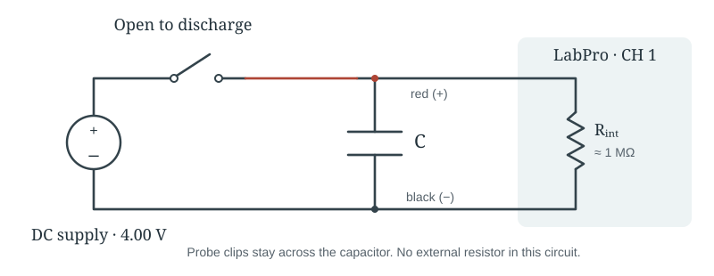
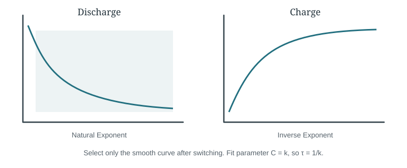
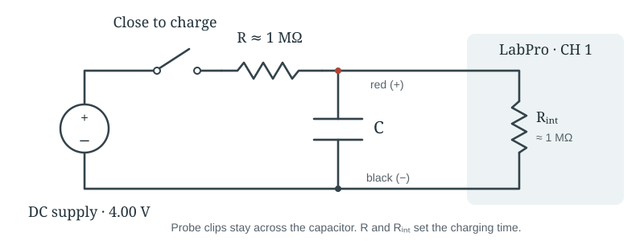
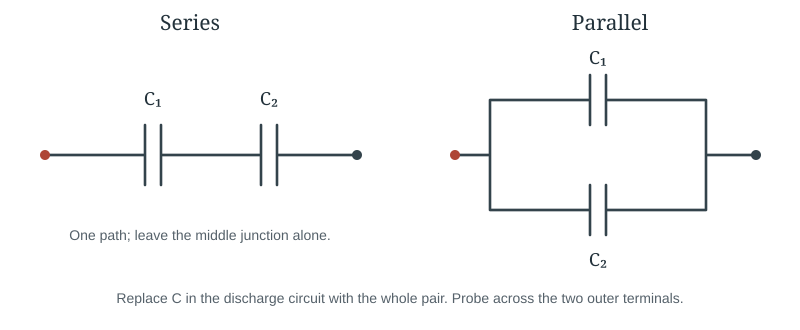

EXPERIMENT 6 · OCTOBER 30, 2026 · SMALL GROUPS
RC Circuit and Capacitors
in Combination
Follow the steps. Enter the readings. Your calculations and report update below.
A / PRELIMINARY
Measure three components
Objective: test the charging and discharging curves, then compare the measured series and parallel capacitances with theory.
- With the supply disconnected and capacitors discharged, measure each capacitor and the approximately 1 MΩ resistor.
- Open LoggerPro → Physics with Vernier → 24 Capacitors. Connect the voltage probe to LabPro analog CH 1.
Copy every displayed digit, including trailing zeros. Enter capacitance in µF and resistance in MΩ.
B / DISCHARGE
Measure the probe’s input resistance

- Use C₁ first. Connect the probe red clip to capacitor + and black clip to capacitor −. Set the supply to 4.00 V with the switch closed.
- Click Collect, wait 2 s, then open the switch. Let collection finish.
- Autoscale. Select only the smooth falling section. Choose Curve Fit → Natural Exponent → Try Fit.
- Record A, B and C below. Save the graph with its fit box as B1-discharge.
- Disconnect the supply before changing components. Repeat with C₂ and save B2-discharge.
The default run is 10 s. If the 10 µF curve is cut short, extend collection to about 60 s so the decay is visible.
Here C is the fit rate (s⁻¹), not capacitance. The calculations call it k.
| Run | A | B | C (s⁻¹) |
|---|---|---|---|
| 1 µF | |||
| 10 µF |
Show exactly which part to fit

C / CHARGE
Add the resistor and repeat

- Use C₁ and the measured resistor. Begin with the switch open; wait for the capacitor voltage to fall close to zero. Keep the supply at 4.00 V.
- Click Collect, wait 2 s, then close the switch.
- Select only the smooth rising section. Choose Curve Fit → Inverse Exponent → Try Fit.
- Record the three fit values. Save C1-charge with its fit box. Repeat using C₂ and save C2-charge.
Copy A, B and C exactly as shown in the fit box. Only C is used for τ. The manual prints unusual brackets around the charging offset; use LoggerPro’s named Inverse Exponent fit rather than typing that expression yourself.
| Run | A | B | C (s⁻¹) |
|---|---|---|---|
| 1 µF charging | |||
| 10 µF charging |
The probe loads the circuit: expect the final voltage near 2 V when both resistances are near 1 MΩ.
D / COMBINATIONS
Two more discharge runs

- Return to the Part B discharge circuit: remove the external resistor.
- Connect the capacitors in series. Charge to 4.00 V, collect, wait 2 s, open the switch, and fit Natural Exponent. Save D-series.
- Discharge and rewire them in parallel. Repeat and save D-parallel. Extend the collection time if needed.
| Run | A | B | C (s⁻¹) |
|---|---|---|---|
| Series discharge | |||
| Parallel discharge |
Before leaving: save the LoggerPro project and all six graphs with readable axes, units and fit boxes. These graphs are needed to assess whether the exponential models fit the measurements.
Report
Automatic uncertainty method
The form keeps all displayed digits. For the three meter readings, the calculation layer uses ±1 last displayed digit as the lab manual’s fallback when a manufacturer specification is unavailable. These are provisional reading uncertainties, not verified specifications for your particular meter/range. No uncertainty entry is required.
Fit coefficients are retained at their displayed precision, but display rounding is not treated as statistical fit uncertainty. No coefficient uncertainty is invented. The manual’s informal-report instructions omit propagated uncertainty analysis. If the instructor gives different meter accuracy or fit requirements, the calculation settings must be updated before the final report.